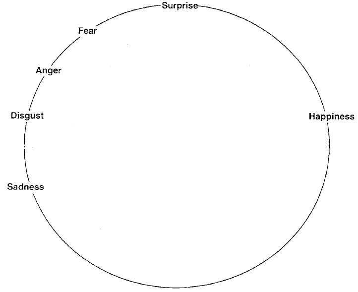
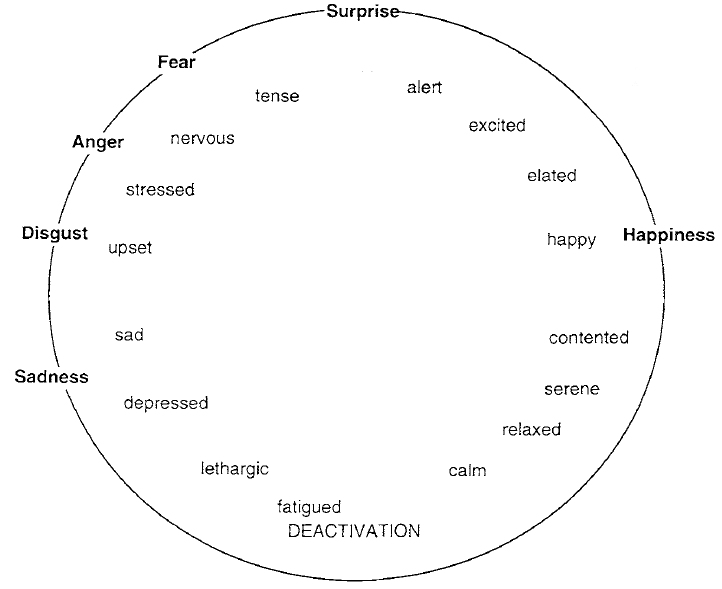
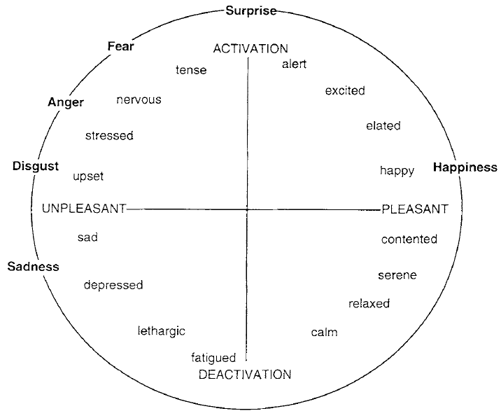
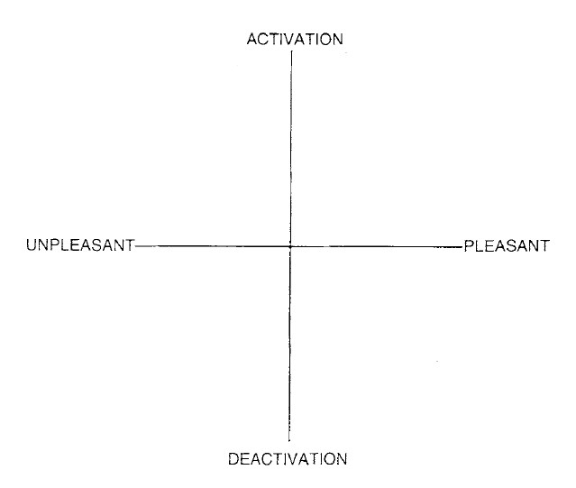

Análisis comparativo de modelos RoBERTa y estrategias de clasificación para la medición ordinal de la polarización afectiva a partir del modelo circunflejo del afecto
Planteo del problema y definiciones conceptuales
Afecto nuclear
Russell & Feldman Barrett (1999)“El sentimiento más elemental accesible desde la consciencia” (p. 806). Puede o no estar referido a un objeto y varía a través del tiempo.
Episodios emocionales prototípicos
Russell & Feldman Barrett (1999)- Definición: “Un grupo complejo de eventos interrelacionados referidos a un objeto específico” (p. 806) — ej.: ira, euforia, miedo o asco.
- Cualitativamente complejos de medir por fuera de casos ejemplares.
- Se manifiestan en períodos específicos con un principio y fin.
- Útiles desde la autocategorización, pero presentan dificultades para atribuirlos a los sujetos.
Episodios emocionales prototípicos

Episodios emocionales prototípicos

Episodios emocionales prototípicos
Afecto nuclear

Afecto nuclear

Corpus y distribución de la muestra anotada
Comentarios en Instagram (Oct 2023 – Dic 2024)
Publicaciones de imágenes generadas con inteligencia artificial por Javier Milei.
Ejemplos ilustrativos del manual de códigos
Dimensión Placer / Displacer
Dimensión Activación / Desactivación
Arquitecturas Transformer y estrategias de modelado
XLM-RoBERTa-Large-XNLI Davison (2020) / Conneau et al. (2020)
Entrenado sobre fuentes formales multilingües (Wikipedia y sitios de noticias).
RoBERTuito-base-uncased Pérez et al. (2022)
Diseñado con tokenizador específico para redes sociales (identifica emojis, risas, URLs, menciones y hashtags).
Ajuste del entrenamiento y criterios de evaluación [ ADAMW · LR = 2e-5 · BATCH = 16 · MAX_LEN = 128 TOKENS ]
| Tarea | Época | Eval Loss | Eval Accuracy | Macro F1 | Precision | Recall |
|---|---|---|---|---|---|---|
| Placer / Displacer |
1 | 1.1170 | 58.00% | 0.4151 | 0.4814 | 0.4561 |
| 2 | 0.9796 | 60.40% | 0.5226 | 0.5677 | 0.5225 | |
| 3 | 0.9364 | 62.40% | 0.5505 | 0.5579 | 0.5534 | |
| 4 | 0.9724 | 58.40% | 0.5209 | 0.5211 | 0.5227 | |
| Activación / Desactivación |
1 | 1.5160 | 29.60% | 0.1469 | 0.2208 | 0.2283 |
| 2 | 1.3630 | 38.00% | 0.3555 | 0.4090 | 0.3534 | |
| 3 | 1.3580 | 39.60% | 0.3900 | 0.4622 | 0.3793 | |
| 4 | 1.3750 | 39.20% | 0.3764 | 0.4091 | 0.3707 |
¿Por qué Exactitud Tolerante (±1) y Correlaciones?
En estudios de polarización, no todos los errores tienen el mismo costo:
- Error de inversión polar: Confundir un extremo displacer (
valor 1) con un extremo placer (valor 5) invierte el sentido del comentario. - Error de intensidad: Confundir un displacer extremo (
valor 1) con uno moderado (valor 2) conserva la dirección del afecto. - Por ello se evalúa Acc Exacta, Acc Tolerante (±1), F1 Macro y los coeficientes Pearson (r) y Spearman (ρ).
Evaluación global en la dimensión Placer / Displacer
| Modelo | Acc Exacta | Acc Tol (±1) | Macro F1 | Prec | Rec | Pearson (r) | Spearman (ρ) |
|---|---|---|---|---|---|---|---|
| RoBERTuito Regresión | 69.60% | 98.40% | 0.6542 | 0.6559 | 0.6623 | 0.9436 | 0.9185 |
| RoBERTuito Multiclase | 62.40% | 88.40% | 0.5505 | 0.5579 | 0.5534 | 0.7877 | 0.7752 |
| XLM-RoBERTa Large | 30.00% | 58.00% | 0.2872 | 0.3301 | 0.2869 | 0.1509 | 0.1513 |
| RoBERTuito Base | 29.20% | 50.40% | 0.2333 | 0.2356 | 0.2344 | 0.1186 | 0.1412 |
Evaluación global en la dimensión Activación / Desactivación
| Modelo | Acc Exacta | Acc Tol (±1) | Macro F1 | Prec | Rec | Pearson (r) | Spearman (ρ) |
|---|---|---|---|---|---|---|---|
| RoBERTuito Regresión | 48.40% | 92.80% | 0.4450 | 0.5008 | 0.4390 | 0.7326 | 0.7170 |
| RoBERTuito Multiclase | 39.60% | 84.00% | 0.3900 | 0.4622 | 0.3793 | 0.5937 | 0.5825 |
| RoBERTuito Base | 20.00% | 55.20% | 0.1710 | 0.2536 | 0.1870 | -0.0648 | -0.0664 |
| XLM-RoBERTa Large | 12.40% | 44.00% | 0.1138 | 0.1962 | 0.1544 | -0.0537 | -0.0271 |
Ejemplos

Desempeño discriminativo por nivel (F1-Score):
| Modelo | Nivel 1 | Nivel 2 | Nivel 3 | Nivel 4 | Nivel 5 | Macro F1 |
|---|---|---|---|---|---|---|
| RoBERTuito Regresión | 0.75 | 0.61 | 0.53 | 0.52 | 0.86 | 0.6542 |
| RoBERTuito Multiclase | 0.70 | 0.62 | 0.38 | 0.29 | 0.76 | 0.5505 |
| XLM-RoBERTa Large | 0.35 | 0.30 | 0.29 | 0.17 | 0.33 | 0.2872 |
| RoBERTuito Base | 0.37 | 0.32 | 0.00 | 0.10 | 0.37 | 0.2333 |
| Modelo | Nivel 1 | Nivel 2 | Nivel 3 | Nivel 4 | Nivel 5 | Macro F1 |
|---|---|---|---|---|---|---|
| RoBERTuito Regresión | 0.41 | 0.45 | 0.57 | 0.49 | 0.31 | 0.4450 |
| RoBERTuito Multiclase | 0.43 | 0.35 | 0.45 | 0.35 | 0.37 | 0.3900 |
| RoBERTuito Base | 0.20 | 0.13 | 0.19 | 0.27 | 0.06 | 0.1710 |
| XLM-RoBERTa Large | 0.04 | 0.18 | 0.05 | 0.16 | 0.13 | 0.1138 |
Nivel 1 y Nivel 5. Softmax amplifica no linealmente las probabilidades ante marcadores léxicos extremos.
[1.0, 5.0] y penalizar desviaciones, la regresión dispone de solo 0,5 unidades de margen en los extremos (1 y 5), frente al ancho completo de 1,0 unidad en los niveles 2, 3 y 4.
Conclusiones:
Regresión Ordinal (MSE) y Multiclase (Softmax)
Tratar el afecto nuclear como un continuo mediante MSE evitó la inversión polar (alcanzando 98,40% y 92,80% de exactitud tolerante) y capturó mejor los matices intermedios (niveles 2, 3 y 4).
Si solo interesara aislar polarización extrema (polos 1 y 5), Multiclase es competitivo; para modelar la totalidad del gradiente afectivo, la Regresión Ordinal es superior.
Asimetría entre dimensiones
Placer / Displacer ofrece marcadores léxicos explícitos (insultos, elogios, términos partidarios) que facilitan la discriminación vectorial.
Activación / Desactivación es sutil y contextual: un fuerte displacer puede articularse desde la alta activación (ira, indignación) o desde la baja activación (tristeza, resignación), volviendo crítica la elección de la arquitectura y la función de pérdida.
Preentrenamiento específico y adaptación local
RoBERTuito Base demostró un desempeño superior al interactuar con el registro coloquial de redes sociales en español frente a modelos multilingües generales.
A su vez, el reentrenamiento (fine-tuning) con una muestra anotada propia duplicó las métricas de rendimiento, superando las limitaciones de los modelos base ante la jerga propia del corpus.